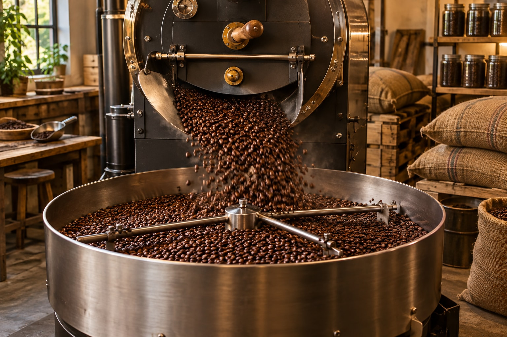
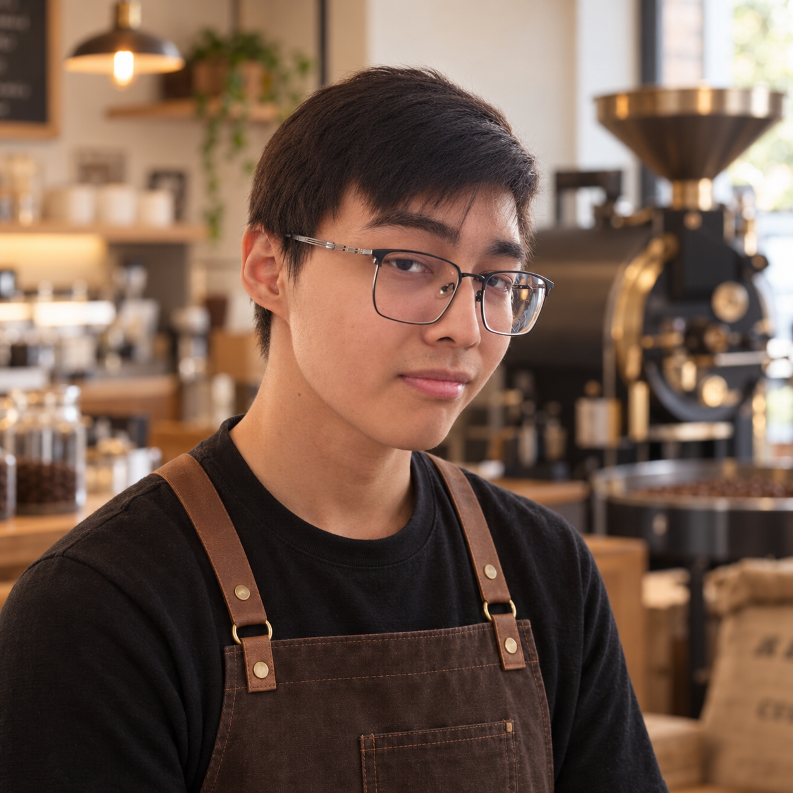
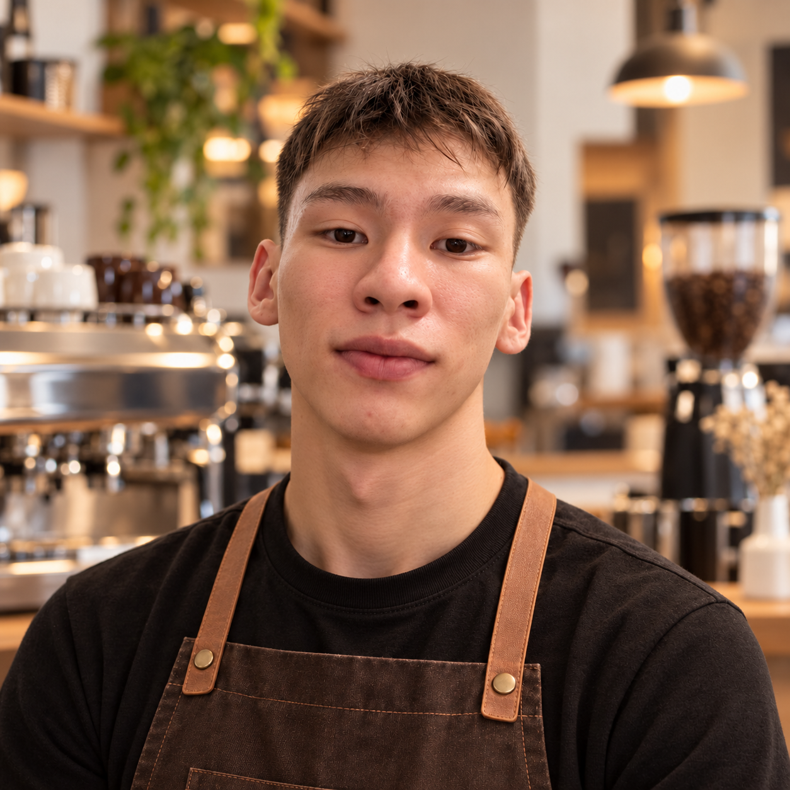

Our Story

Aura Coffee Roasters was born out of a late-night study session. As university students navigating through complex coding assignments, we realized how crucial a good cup of coffee was. Disappointed by the lack of authentic, specialty coffee shops near our campus in Astana, we decided to learn the art of roasting ourselves.
Today, Aura is more than just a cafe. It's a community hub where ideas are born, friendships are forged, and every cup is crafted with precision and passion.
About the Team Members

Shalabay Madi
Co-Founder & Head Roaster
Madi approaches coffee roasting like writing perfect code — it requires patience, precise temperatures, and constant testing. He sources all our beans directly from ethical farms.

Ibragim Yerkhan
Co-Founder & Chief Barista
Yerkhan ensures the quality of every beverage that crosses the counter. A master of latte art and customer experience, he makes sure everyone leaves with a smile.